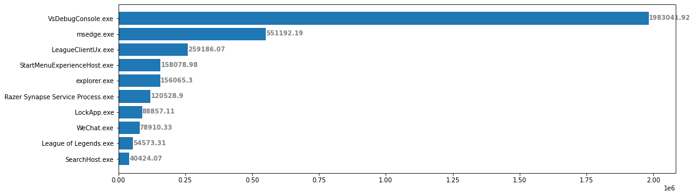
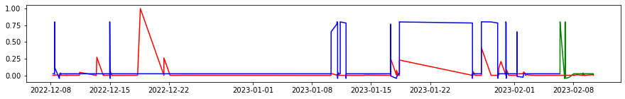

Credit: BIJAN ARBAB, JAMEL TAYEB, SRUTI SAHANI, OUMAIMA KAKHLOUK, PRAVEEN POLASAM,TERESA REXIN
This is the website for DSC180B Project. In this project, we first implemented the hidden markov model for predicting the next application based on the current application opened on the windows. To increase the accuracy, we predict the next few possible applications instead of just a single one. Furthermore, we implemented a Long short-term memory method based on the Recurrent neural network model to predict the total time an application is used in the foreground.
This project was inspired by a very simple idea: Provided with a computer user's activity dataset, including the application windows the user opened, when and where on the foreground window did the application show up, and the mouse position on the foreground window, can we, as data scientist, predict the user's activities, and make prediction of the user's next step, such as the next application the user will open, and how long will the user spend on the application.
With the help from Intel team and Halıcıoğlu Data Science Institute at UCSD, our group have a chance to practice with this interesing topic. We first spent 10 weeks on implementing data collection librarys based on the XLSDK, a data-collection and analysis framework for user to collect device data using different input libraries, including the user-wait input library, the foreground window input library, the Desktop Mapper input library, etc. After finished with learning and implementing the input libraries we need for data collection, we spent over a month on data collecting. We collect the user's data on our own computer when we operating on the desktop.
When we collected enough data, we start our second 10 weeks. For these 10 weeks, we spent the time on data analysis and model development. After a month of data collecting using visual studio, we have about 30 different databases in DB form, and the first thing we need to do is to merge all the dataset into one entire database. After we have the entire dataset, we then start the data cleaning and EDA steps. Based on the EDA result, we select all the applications' executive name as the dataset we want to continue our analysis on. We then inplement the Hidden Markov Model and the Long short-term memory model onto the application dataset. The HMM is used to predict the possible next application(s) given the previous application name, and the LSTM is used to predict the duration of each application at a certain time. With these two prediction model in hand, we can now answer the question we addressed in the beginning, we can make predictions based on the user activities, and from there we can then use these predictions to help improve the user's accuracy and efficiency.
In the first 10 weeks of project, we focus on build up the input library to capture and collect the data from the user's computer. Here it comes the first and biggest challenge that we have to face in this entire project, since the entire input library based on the C++ language, and for all of us this language is totally new, so we have to learn and practice with C++ from the beginning, while in the meantime we have to use this brand new language to implement our input library using visual studio. It is not a funny experience, but we have learnt a lot about C++ during this 10 weeks' practicing.
C++ is completely different from what we have learnt in python. We learn about the structure of a typical input library, we learn about functions for capture user activities such as GetForegroundWindow(), GetWindowTextW() and GetWindowRect(), we also faced problems such as data
collector collects information every 1000 milliseconds for example, but we don’t
want to log the same application foreground window records if the window keeps
opening. So to solve this problem, we use the PID, an identity value that each window will have a unique one, as an indicator so that we can log the information as
long as there is a change on the foreground windows.
During our experience, we also faced many interesting errors or bugs, such as some times we capture the file name, but it happens to be empty, or sometimes we can only capture a certain windows, while the rest of the windows will not be captured. We spends time to solve these problems, and we also discuss this bugs with the intel team and other groups to see if we can come up with better ideas or if they also encounter similar problems. From these problems, we learnt a lot about the data we are going to capture, and what should we expect to use for out next step of data analysis.
After we collected all the data using visual studio, we have about 52 different databases in DB form, and the first thing we need to do is to merge all the dataset into one entire database. We complete this step using the sqlite3 package, with the provided connect function, we can convert all the db type of files into sql queries, and then we use the pandas function read_sql_query to read all sql queries into pandas dataframe, then we call merge functions to combined all these dataframes.
To first explore the dataset, we decided to take some simple analyze on the exe files. After split out all the records ends with ".exe" and ".EXE" into separate dataframe, we first find out the most frequently used application which is Microsoft Edge browser (msedge.exe), and we plot the top 10 most frequently used applications in a barplot.
And based on this result, we also want to see if there will be a difference between the most frequently used applications plot and the applications with the longest duration plot. We can see that these two plots are slightly different, the user spends more time on entertainment applications but less frequently using them, while the searching engines were frequently accessed, the total time the user spends is not that long.
The data consists of 12825 entries. Our data was collected from December 8th, 2022 to February 10th, 2023. The data includes 1540 hours of PC usage which means that from December 8th, 2022 to February 10th, 2023, the user used his PC for 1540 hours and we collected all his foreground window activity. The user had opened 51 unique PC applications including Microsoft Edge browser, Spotify, Microsoft Word and other commonly used applications.
A Hidden Markov Model is a type of statistical model that is often used to model sequences of events or observations, where some aspects of the underlying process generating the data are unknown or hidden. In our project, the hidden state is the connection between the applications. As a human being we can easily figure out these kind of connections, such as when you are working with a windows word file, you are more likely to access the browser or visual code or other applications that related with studying, but when you are currently playing games or watching videos, you probably won’t open a word document all of a sudden and start to do your work.
To build our own HMM model, we first need to calculate thestart probability of all the applications appearing in the dataset. Then for all of the applications, computed the transition matrix, which is a matrix that indicates the probability each application will be opened based on the application provided. Finally, we integrate all the previous steps into a hidden markov model, and then we can test out the model with the entire dataset split into training and testing data. Below is the correlation matrix of all the applications with each other, and we can tell some of the applications does have a relatively high correlation with another, such as REDLauncher.exe with Cyberpunk2077.exe, Anaconda with python, etc.
Now we have the model with only one prediction for each previous applications. To increase the accuracy, also to provide a more reasonable output, we include variable n to represent the number of possible output we want, which is the applications that have the highest n probabilities in our transition matrix. With this model, we developed our maximum accuracy to 74.455% with 6 possible results.
Recurrent Neural Network (RNN) is a type of deep learning model that is commonly used for processing sequential data, such as natural language processing, and time series prediction. We chose LSTM networks to help us make predictions on the time duration of a foreground window, because LSTM can effectively capture short-term and long-term dependencies in sequential data.
Before we implement the LSTM, we first need to do feature engineering and transform the data into a condition which is ready to use for the LSTM model. Firstly, we extracted the time and categorized it to hour, minute, day, month. Then, we encoded the application names and added it to the dataframe. Lastly, we added the time duration of each foreground window into the dataframe.
We scaled all the collected data with MinMaxScaler and one-hot encode, and used the scaled data to fit the model. We added 4 LSTM layers with 5, 10, 3, 10 units respectively following with a dropout layer. At the end, we added a dense layer with 1 unit because we wanted the model outputs to be one dimension after passing through all the LSTM layers.
And to analyze the accuracy of the scaled true value and prediction, we implemented a threshold of 0.02 to check if the difference between predictions and true values are significant or not. With the threshold, we can successfully measure the difference between the predicted and true value, which then makes the accuracy up to 88.67%. Here is we plotting the true value with the prediction of the train data set and test data set.
With all these findings we developed from our entire project and all these high accuracy results of our prediction compared to the real value, we can now come back to the question we introduced in the beginning, can we now use the user’s data we collected, to build up an application prediction and recommendation system for the user? I believe that the answer will be yes. Within our project, we can already predict the user’s next possible applications with a relatively high accuracy, and also we can predict the duration of different applications. So if we combine these two models together, we can build up a system that opens and closes applications for the user, and the user will be more efficient during his working experience. And with more and more data having been collected, I believe the accuracy of the model will also increase a lot. From here, the next step we will focus on is to identify pop up windows for the user, such as all those harassment advertisements, or those pop-up windows installed with the application itself, and try to close them in advance before the user even notices them.
created with
Website Builder Software .